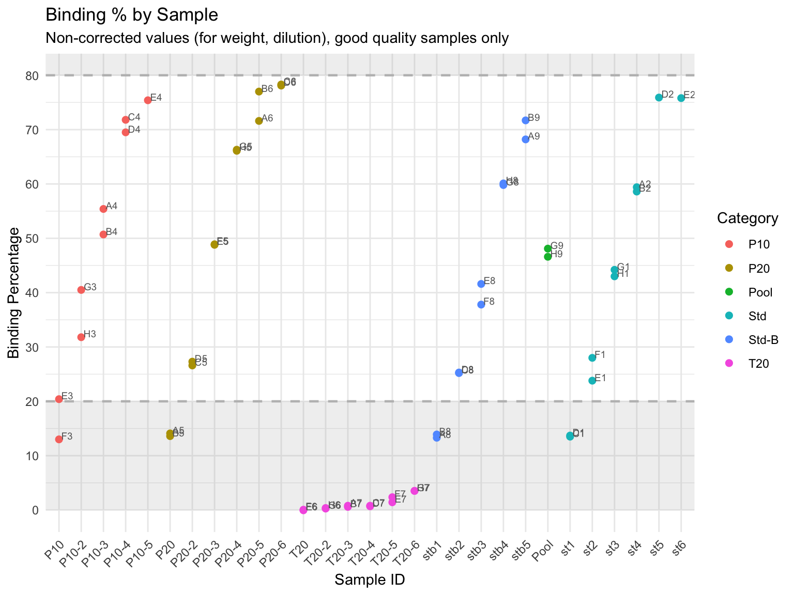
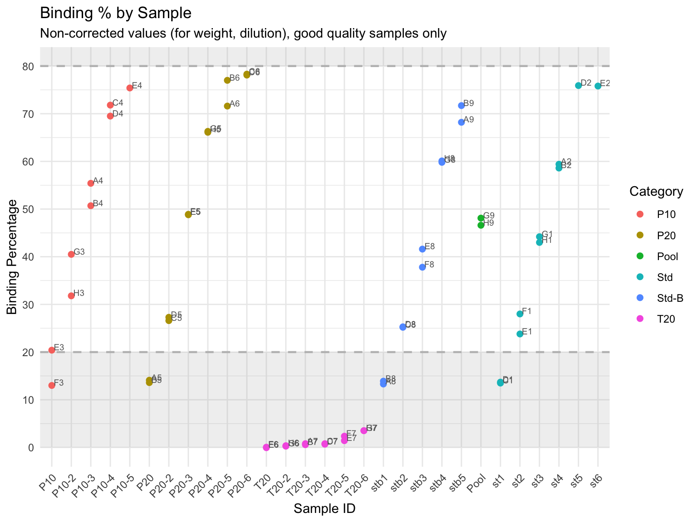
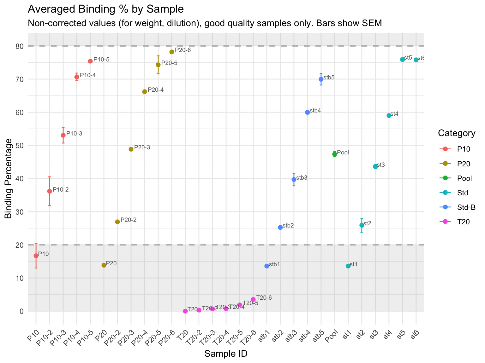
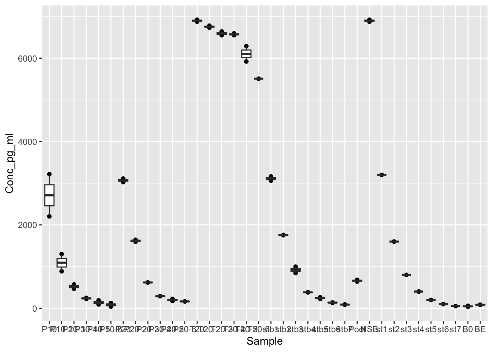

ELISA data analysis
Paloma
Last updated: 2025-11-07
Checks: 6 1
Knit directory:
HairCort-Evaluation-Nist2020/
This reproducible R Markdown analysis was created with workflowr (version 1.7.1). The Checks tab describes the reproducibility checks that were applied when the results were created. The Past versions tab lists the development history.
The R Markdown is untracked by Git. To know which version of the R
Markdown file created these results, you’ll want to first commit it to
the Git repo. If you’re still working on the analysis, you can ignore
this warning. When you’re finished, you can run
wflow_publish to commit the R Markdown file and build the
HTML.
Great job! The global environment was empty. Objects defined in the global environment can affect the analysis in your R Markdown file in unknown ways. For reproduciblity it’s best to always run the code in an empty environment.
The command set.seed(20241016) was run prior to running
the code in the R Markdown file. Setting a seed ensures that any results
that rely on randomness, e.g. subsampling or permutations, are
reproducible.
Great job! Recording the operating system, R version, and package versions is critical for reproducibility.
Nice! There were no cached chunks for this analysis, so you can be confident that you successfully produced the results during this run.
Great job! Using relative paths to the files within your workflowr project makes it easier to run your code on other machines.
Great! You are using Git for version control. Tracking code development and connecting the code version to the results is critical for reproducibility.
The results in this page were generated with repository version df368cb. See the Past versions tab to see a history of the changes made to the R Markdown and HTML files.
Note that you need to be careful to ensure that all relevant files for
the analysis have been committed to Git prior to generating the results
(you can use wflow_publish or
wflow_git_commit). workflowr only checks the R Markdown
file, but you know if there are other scripts or data files that it
depends on. Below is the status of the Git repository when the results
were generated:
Ignored files:
Ignored: .DS_Store
Ignored: .RData
Ignored: .Rhistory
Ignored: analysis/.DS_Store
Ignored: analysis/.Rhistory
Ignored: analysis/data/
Ignored: data/.DS_Store
Ignored: data/Test10/.DS_Store
Ignored: data/Test7/.DS_Store
Ignored: data/Test8/.DS_Store
Ignored: data/Test9/.DS_Store
Ignored: figure/.DS_Store
Ignored: output/.DS_Store
Untracked files:
Untracked: analysis/Data_analysis_ALL_PLATES.Rmd
Untracked: analysis/Data_analysis_render_all.R
Untracked: analysis/Old/
Untracked: analysis/inter-assay-eval.Rmd
Untracked: data/Test3_old/
Untracked: data/Test4_old/
Untracked: data/Test5_old/
Untracked: data/Test6_old/
Unstaged changes:
Deleted: analysis/Data_analysis.Rmd
Deleted: analysis/ELISA_Analysis_FinalVals_test3.Rmd
Deleted: analysis/ELISA_Analysis_FinalVals_test4.Rmd
Deleted: analysis/ELISA_Analysis_FinalVals_test5.Rmd
Deleted: analysis/ELISA_Analysis_FinalVals_test6.Rmd
Deleted: analysis/ELISA_Analysis_FinalVals_test7.Rmd
Deleted: analysis/ELISA_Analysis_FinalVals_test8.Rmd
Deleted: analysis/ELISA_Analysis_FinalVals_test9.Rmd
Deleted: analysis/ELISA_Analysis_RawVals_Models_test3.Rmd
Deleted: analysis/ELISA_Analysis_RawVals_test3.Rmd
Deleted: analysis/ELISA_Analysis_RawVals_test4.Rmd
Deleted: analysis/ELISA_Analysis_RawVals_test5.Rmd
Deleted: analysis/ELISA_Analysis_RawVals_test6.Rmd
Deleted: analysis/ELISA_Analysis_RawVals_test7.Rmd
Deleted: analysis/ELISA_Analysis_RawVals_test8Rmd.Rmd
Deleted: analysis/ELISA_Analysis_RawVals_test9.Rmd
Deleted: analysis/ELISA_Calc_FinalVals_test3.Rmd
Deleted: analysis/ELISA_Calc_FinalVals_test4.Rmd
Deleted: analysis/ELISA_Calc_FinalVals_test5.Rmd
Deleted: analysis/ELISA_Calc_FinalVals_test6.Rmd
Deleted: analysis/ELISA_Calc_FinalVals_test7.Rmd
Deleted: analysis/ELISA_Calc_FinalVals_test8.Rmd
Deleted: analysis/ELISA_Calc_FinalVals_test8_V2.Rmd
Deleted: analysis/ELISA_Calc_FinalVals_test9.Rmd
Deleted: analysis/ELISA_Calc_FinalVals_test9_V2.Rmd
Deleted: analysis/ELISA_QC_test3.Rmd
Deleted: analysis/ELISA_QC_test4.Rmd
Deleted: analysis/ELISA_QC_test5.Rmd
Deleted: analysis/ELISA_QC_test6.Rmd
Deleted: analysis/ELISA_QC_test7.Rmd
Deleted: analysis/ELISA_QC_test8.Rmd
Deleted: analysis/ELISA_QC_test9.Rmd
Deleted: analysis/ELISA_Simulation_test4.Rmd
Deleted: analysis/Test5_design.Rmd
Deleted: analysis/Test7_raw_from_plate.Rmd
Deleted: analysis/Test8_raw_from_plate.Rmd
Deleted: analysis/Test9_raw_from_plate.Rmd
Deleted: analysis/render_all.R
Deleted: data/Standard_data_testNUM.csv
Modified: data/Test10/Merged_ELISA_results_Test10.csv
Deleted: data/Test10/Standard_data_testNUM.csv
Deleted: data/Test10/layout_wells_test10_DATE.csv
Deleted: data/Test10/myassays_table_test10_DATE.csv
Deleted: data/Test10/raw.plate.csv
Deleted: data/Test3/Data_Cortisol_Processed.csv
Deleted: data/Test3/Data_QC_filtered.csv
Deleted: data/Test3/Data_QC_flagged.csv
Deleted: data/Test3/Data_cort_values_ABC.csv
Deleted: data/Test3/Data_cort_values_methodA.csv
Deleted: data/Test3/Data_cort_values_methodB.csv
Deleted: data/Test3/Data_cort_values_methodC.csv
Deleted: data/Test3/Standard_data_test3.csv
Deleted: data/Test3/failed_samples.csv
Deleted: data/Test3/layout_wells_test3_091524.csv
Deleted: data/Test3/myassays_table_test3_091524.csv
Deleted: data/Test3/precision_accuracy_summary.csv
Deleted: data/Test3/sample_info_test3_091524.csv
Deleted: data/Test4/Data_QC_filtered (1).csv
Deleted: data/Test4/Data_QC_filtered.csv
Deleted: data/Test4/Data_QC_flagged (1).csv
Deleted: data/Test4/Data_QC_flagged.csv
Deleted: data/Test4/Data_cort_values_methodA.csv
Deleted: data/Test4/Data_cort_values_methodB.csv
Deleted: data/Test4/Data_cort_values_methodC.csv
Deleted: data/Test4/Data_cort_values_method_ALL.csv
Deleted: data/Test4/Standard_data_test4.csv
Deleted: data/Test4/failed_samples (1).csv
Deleted: data/Test4/failed_samples.csv
Deleted: data/Test4/layout_wells_test4_021925.csv
Deleted: data/Test4/myassays_table_test4_021925 (1).csv
Deleted: data/Test4/myassays_table_test4_021925.csv
Deleted: data/Test4/myassays_table_test4_021925_acc_dilution.csv
Deleted: data/Test5/Data_QC_filtered.csv
Deleted: data/Test5/Data_QC_flagged.csv
Deleted: data/Test5/Data_cort_values_methodA.csv
Deleted: data/Test5/Data_cort_values_methodB.csv
Deleted: data/Test5/Data_cort_values_methodC.csv
Deleted: data/Test5/Data_cort_values_method_ALL.csv
Deleted: data/Test5/Standard_data_test5.csv
Deleted: data/Test5/failed_samples.csv
Deleted: data/Test5/layout_wells_test5_051325.csv
Deleted: data/Test5/myassays_table_test5_051325.csv
Deleted: data/Test6/Data_QC_filtered.csv
Deleted: data/Test6/Data_QC_flagged.csv
Deleted: data/Test6/Data_cort_values_methodA.csv
Deleted: data/Test6/Data_cort_values_methodB.csv
Deleted: data/Test6/Data_cort_values_methodC.csv
Deleted: data/Test6/Data_cort_values_method_ALL.csv
Deleted: data/Test6/Standard_data_test6.csv
Deleted: data/Test6/failed_samples.csv
Deleted: data/Test6/layout_wells_test6_053025.csv
Deleted: data/Test6/myassays_table_test6_053025.csv
Deleted: data/Test7/Data_QC_filtered.csv
Deleted: data/Test7/Data_QC_flagged.csv
Deleted: data/Test7/Data_cort_values.csv
Deleted: data/Test7/Standard_data_test7.csv
Deleted: data/Test7/failed_samples.csv
Deleted: data/Test7/layout_wells_test7_081025.csv
Deleted: data/Test7/myassays_table_test7_081025.csv
Deleted: data/Test7/raw.plate.csv
Deleted: data/Test8/Data_QC_filtered.csv
Deleted: data/Test8/Data_QC_flagged.csv
Deleted: data/Test8/Data_cort_values.csv
Modified: data/Test8/Merged_ELISA_results_Test8.csv
Deleted: data/Test8/Standard_data_test8.csv
Deleted: data/Test8/failed_samples.csv
Deleted: data/Test8/layout_wells_test8_090225.csv
Deleted: data/Test8/myassays_table_test8_090225.csv
Deleted: data/Test8/myassays_table_test8_090225_ave.csv
Deleted: data/Test8/raw.plate.csv
Deleted: data/Test9/Data_QC_filtered.csv
Deleted: data/Test9/Data_QC_filtered2.csv
Deleted: data/Test9/Data_QC_flagged.csv
Deleted: data/Test9/Data_QC_flagged2.csv
Deleted: data/Test9/Data_cort_values.csv
Modified: data/Test9/Merged_ELISA_results_Test9.csv
Deleted: data/Test9/Standard_data_test251008.csv
Deleted: data/Test9/failed_samples.csv
Deleted: data/Test9/failed_samples2.csv
Deleted: data/Test9/layout_wells_test9_251008.csv
Deleted: data/Test9/myassays_table_test9_251008.csv
Deleted: data/Test9/myassays_table_test9_251008_ave.csv
Deleted: data/Test9/raw.plate.csv
Deleted: data/layout_wells_testX_DATE.csv
Deleted: inter-assay-eval.Rmd
Deleted: inter-assay-eval.html
Deleted: myassays_table_test4_021925_acc_dilution.csv
Deleted: test4_parallelism.csv
Deleted: toydataset.csv
Note that any generated files, e.g. HTML, png, CSS, etc., are not included in this status report because it is ok for generated content to have uncommitted changes.
There are no past versions. Publish this analysis with
wflow_publish() to start tracking its development.
1 Overview
This file documents all the transformations done to obtain final cortisol values for the ELISA plate called:
Test7This is how final values were obtained:
|-- Plate reader produces optical density (OD) values
|
|
|---> Myassays.com uses ODs and map of plate layout to:
1) Subtract readings for the NSB (non-specific binding, 0% binding) well
from all values
2) Normalize all values, dividing them by the reading for the zero standard
(blank, or B0, 100% binding)
3) Fit a 4-Parameter Logistic curve (for a sigmoidal shape)
to the standard readings
4) Extrapolate cortisol concentration values from the standard curve
* Obtained values for each replicate separately by
treating them as a single sample when providing
the plate layout
* These values do not control for differences
in dilution, sample weight, spike, etc.
* Values obtained are in the same unit as the
standards provided (pg/ml)
* Flagged samples were labeled as such in SampleInfo.csv file
|
|
|----> In R, I calculate final values using two formulas:
A) Traditional used across studies
B) Alternative, accounts for Spike (when necessary)Example with actual results from Plate 10:
| ID. | Optical Density | OD-NSB (0.05) | B/B0 (0.792) *100 | Conc (pg/ml) extrapolated from std curve (A) |
|---|---|---|---|---|
| T100. | 0.373 | 0.323 | 41% | 916.1 |
| T100. | 0.383 | 0.333 | 42% | 871 |
Now, using the formula A * F / B * C / D * E, we calculate the normalized final concentration value, adjusted for mass, extraction and reconstitution volumes.
| A (Concentration in pg/ml) | B (Mass in mg) | C (MeOH added in mL) | D (MeOH recovered in mL) | E (Reconstitution volume in mL) | F (Sample dilution factor) | Result in pg/mg |
|---|---|---|---|---|---|---|
| 916.1 | 16 | 1.4. | 1. | 0.22 | 1. | 17.6 |
| 871 | 16 | 1.4 | 1 | 0.22 | 1. | 16.7 |
Check Rmarkdown file to see the code used to clean and merge data frames.
2 Results
2.1 Binding Percentages and non-normalized cort values
 ## Binding Percentages by Sample
## Binding Percentages by Sample
 ## Binding Percentages by Sample, filtered out flagged samples

## Binding Percentages by Sample, averaged for replicates
## Binding Percentages by Sample, filtered out flagged samples

## Binding Percentages by Sample, averaged for replicates
`summarise()` has grouped output by 'Sample'. You can override using the
`.groups` argument.
3 Results by hair count (if information exists)
Skipping plot, data set does not have information on
the number of hair strandsSkipping plotSkipping plotSkipping plotSkipping plotSkipping plot
Skipping plot
Skipping plot4 Calculating final, normalized values
4.1 Formula A (traditional)
A * F / B * C / D * E = Cortisol concentration in pg/mg
▪ A = output myassays.com (pg/ml)
▪ B = sample mass (mg)
▪ C = methanol added for extraction (mL)
▪ D = methanol recovered (mL)
▪ E = reconstitution volume (mL)
▪ F = Sample dilution factor (2 if 1:2, 4 if 1:4)
############################################################
##### Calculate final values not accounting for spike
############################################################
data$Final_pg_mg <-
(data$Conc_pg_ml * data$Dilution_factor_sample
/ data$Weight_mg) * # A / B *
data$Extraction_ratio * # C / D *
data$Reconst_buffer_ml # E Skipping plot4.2 Formula B (accounting for spike)
Simplifies unnecessary unit transformations and accounts for spike considering dilution of both sample and the spike
- Step 1: Calculate contribution of the spike
- Step 2: Subtract spike from plate reading values and calculate final values accounting for dilution of the sample, weight, and reconstitution
Step 1: Calculate contribution of spike
X * Y / Z / SPd = SP
- SP = final value of spike contribution in pg/mL
- X = volume of spike added (mL)
- Y = concentration of the spike added (pg/mL)
- SPd = if serially diluted, dilution factor for the spike (i.e: 1, 2, 4, 8, etc.)
- Z = total volume (mL) in the well or tube, if spike is added before loading the plate (sample + spike)
# Calculating contribution of the spike
# consider spike volume added, either in the tube or the well
data$SpikeVol_ml <- data$Spike_well_ml + data$Spike_tube_ml
# consider total volume of liquid added to the well, adding up spike, buffer and sample volumes
data$TotalVol_ml <- data$Spike_well_ml + data$Sample_well_ml + data$Buffer_well_ml
# reading for the standard used to spike samples
# I already run the following line, to save the std readings before overwritting the Ave_conc_pg_ml object
# std <- data[data$Sample == spike_std, c("Ave_conc_pg_ml")]
# average both readings
std <- mean(std)
# Calculate spike contribution to each sample
## ( Spike vol. x Spike Conc.)
## ------------------------ / dilution = Spike contribution (pg/ml)
## Total vol.
# Calculate cort contribution of spike to each sample
data$Spike_contribution <- ((data$SpikeVol_ml * std / # X * Y /
data$TotalVol_ml ) / # Z /
data$Dilution_factor_spike) # SPd
# Null contributions equal zero
data <- data %>%
mutate(Spike_contribution = ifelse(is.na(Spike_contribution) | is.nan(Spike_contribution), 0, Spike_contribution))The reading for the standard used as spike (which is st1 ) in this plate is 3110.5 (pg/ml)The contribution of the spike, considering how much is added to the well, is 0 pg/mlStep 2 : Substract spike and calculate final values
((A - SP) * F /B) * (C/D) * E = G
- A = pg/ml from assay output;
- SP = spike contribution (in pg/ml)
- B = weight (in mg) of hair subjected to extraction;
- C = vol. (in ml) of methanol added to the powdered hair;
- D = vol. (in ml) of methanol recovered from the extract and subsequently dried down;
- E = vol. (in ml) of assay buffer used to reconstitute the dried extract;
- Sample dilution factor
- G = final value of hair CORT Concentration in pg/mg.
##################################
##### Calculate final values #####
##################################
data$Final_pg_mg_sp <-
((data$Conc_pg_ml - data$Spike_contribution) * # (A - spike)
data$Dilution_factor_sample) / # * dilution factor /
data$Weight_mg * # B *
data$Extraction_ratio * # C / D *
data$Reconst_buffer_ml # E 
5 Quality
Flag samples with high coefficient of variation (replicate measurements that are too different from each other) or that fall outside the standard curve (binding percentage is above 80%, or under 20%)
# flag samples with high CV (15%) or binding above 80% and under 20%
CV_threshold <- 15.0
uppBinLim <- 80.0
lowBinLim <- 20.0Total samples outside the curve: 35 (some are blanks or NSB)# A tibble: 35 × 3
Well Sample Category
<chr> <fct> <fct>
1 F3 P10 P10
2 F4 P10-5 P10
3 G4 P10-6 P10
4 H4 P10-6 P10
5 A5 P20 P20
6 B5 P20 P20
7 E6 T20 T20
8 F6 T20 T20
9 G6 T20-2 T20
10 H6 T20-2 T20
# ℹ 25 more rowsHigh CV in a total of 10 replicates. These are:# A tibble: 10 × 3
Well Sample Category
<chr> <fct> <fct>
1 G4 P10-6 P10
2 H4 P10-6 P10
3 E4 P10-5 P10
4 F4 P10-5 P10
5 G3 P10-2 P10
6 H3 P10-2 P10
7 E3 P10 P10
8 F3 P10 P10
9 A6 P20-5 P20
10 B6 P20-5 P20 
Samples with concerningly high CV valuesSummary final cortisol values for all samples Min. 1st Qu. Median Mean 3rd Qu. Max. NA's
1.452 31.936 54.799 Inf 106.429 Inf 18 

5.3 Plot: results grouped by data quality
Skipping plotWrote 72 rows to ./data/Test7/Merged_ELISA_results_Test7.csv, with a total of 36 data points, including reference values such as blanks and standardsThe final file has the following columns: [1] "Plate_num" "Well" "Sample"
[4] "Category" "Subcategory" "Person"
[7] "Order" "Num_strands" "Weight_mg"
[10] "Reconst_buffer_ml" "Sample_well_ml" "Buffer_well_ml"
[13] "Buffer_tube_ml" "Dilution_factor_sample" "Spike"
[16] "Spike_well_ml" "Spike_tube_ml" "Dilution_factor_spike"
[19] "Extraction_ratio" "Comments" "OD"
[22] "Binding_perc" "Conc_pg_ml" "Ave_conc_pg_ml"
[25] "CV_perc" "SD" "SEM"
[28] "Std_recovery" "Final_pg_mg" "Ave_Final_pg_mg"
[31] "z" "SpikeVol_ml" "TotalVol_ml"
[34] "Spike_contribution" "Final_pg_mg_sp" "Binding_perc_categ"
[37] "CV_categ" This is a list of all the samples included: [1] P10 P10-2 P10-3 P10-4 P10-5 P10-6 P20 P20-2 P20-3 P20-4 P20-5 P20-6
[13] T20 T20-2 T20-3 T20-4 T20-5 T20-6 stb1 stb2 stb3 stb4 stb5 stb6
[25] stb7 Pool NSB st1 st2 st3 st4 st5 st6 st7 B0 BE
36 Levels: P10 P10-2 P10-3 P10-4 P10-5 P10-6 P20 P20-2 P20-3 P20-4 ... BE6 Pending
R version 4.5.2 (2025-10-31)
Platform: aarch64-apple-darwin20
Running under: macOS Tahoe 26.0.1
Matrix products: default
BLAS: /System/Library/Frameworks/Accelerate.framework/Versions/A/Frameworks/vecLib.framework/Versions/A/libBLAS.dylib
LAPACK: /Library/Frameworks/R.framework/Versions/4.5-arm64/Resources/lib/libRlapack.dylib; LAPACK version 3.12.1
locale:
[1] en_US.UTF-8/en_US.UTF-8/en_US.UTF-8/C/en_US.UTF-8/en_US.UTF-8
time zone: America/Detroit
tzcode source: internal
attached base packages:
[1] stats graphics grDevices utils datasets methods base
other attached packages:
[1] gt_1.0.0 GGally_2.4.0 gridExtra_2.3 ggrepel_0.9.6
[5] janitor_2.2.1 lubridate_1.9.4 forcats_1.0.0 stringr_1.5.1
[9] dplyr_1.1.4 purrr_1.0.4 readr_2.1.5 tidyr_1.3.1
[13] tibble_3.2.1 ggplot2_4.0.0 tidyverse_2.0.0 knitr_1.50
loaded via a namespace (and not attached):
[1] gtable_0.3.6 xfun_0.52 bslib_0.9.0 lattice_0.22-7
[5] tzdb_0.5.0 vctrs_0.6.5 tools_4.5.2 generics_0.1.3
[9] parallel_4.5.2 pkgconfig_2.0.3 Matrix_1.7-4 RColorBrewer_1.1-3
[13] S7_0.2.0 lifecycle_1.0.4 compiler_4.5.2 farver_2.1.2
[17] git2r_0.36.2 snakecase_0.11.1 httpuv_1.6.16 htmltools_0.5.8.1
[21] sass_0.4.10 yaml_2.3.10 crayon_1.5.3 later_1.4.2
[25] pillar_1.10.2 jquerylib_0.1.4 cachem_1.1.0 nlme_3.1-168
[29] ggstats_0.11.0 tidyselect_1.2.1 digest_0.6.37 stringi_1.8.7
[33] labeling_0.4.3 splines_4.5.2 rprojroot_2.0.4 fastmap_1.2.0
[37] grid_4.5.2 cli_3.6.4 magrittr_2.0.3 utf8_1.2.4
[41] withr_3.0.2 scales_1.4.0 promises_1.3.2 bit64_4.6.0-1
[45] timechange_0.3.0 rmarkdown_2.29 bit_4.6.0 workflowr_1.7.1
[49] hms_1.1.3 evaluate_1.0.3 mgcv_1.9-3 rlang_1.1.6
[53] Rcpp_1.0.14 glue_1.8.0 xml2_1.3.8 rstudioapi_0.17.1
[57] vroom_1.6.5 jsonlite_2.0.0 R6_2.6.1 fs_1.6.6